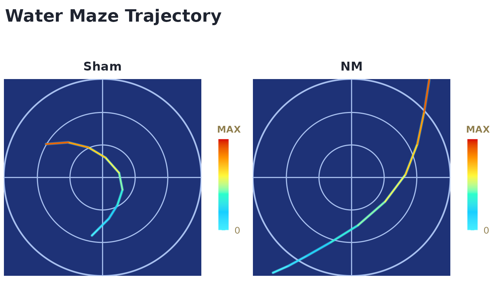

This convenience wrapper delegates to plot_watermaze() or
plot_minefield() and returns the same ggplot object.
Usage
plot_mmviz(input, task, cfg = list(), out_file = NULL)Examples
path <- system.file("templates", "watermaze_template.csv", package = "MMV")
plot_mmviz(path, task = "watermaze", cfg = list(style_mode = "builtin"))
